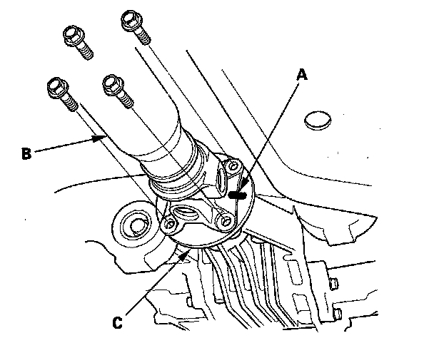

Propeller Shaft Removal
Propeller Shaft Removal1. Raise the vehicle on a lift.
2. Remove the propeller shaft protector.
3. Make a reference mark (A) across the No. 1 propeller shaft (B) and transfer companion flange (C).
4. Separate the No. 1 propeller shaft from the transfer assembly.
5. Remove the center support bearing mounting bolts.
6. Make a reference mark (A) across the No. 2 propeller shaft (B) and rear differential companion flange (C).

7. Separate the No. 2 propeller shaft from the rear differential, then remove the propeller shaft.